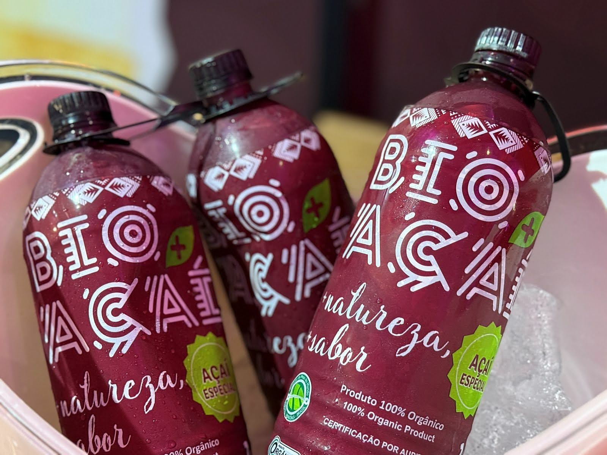

Fonte: Isabel Ubaiara / Denyse Quintas. Agência Sebrae.
A iniciativa chamada "Polo de Referência em Gastronomia da Amazônia" nasce com o propósito de dar visibilidade à gastronomia amazônica, fomentar negócios sustentáveis e criativos e consolidar um ecossistema que conecte tradição, inovação e responsabilidade socioambiental.
O Sebrae no Amapá foi escolhido como guardião para coordenar e sediar as ações com foco na valorização da biodiversidade amazônica e no fortalecimento da gastronomia como vetor de desenvolvimento econômico, social e cultural. O lançamento ocorrerá na sede do Sebrae Nacional, em Brasília (DF), localizado no endereço SGAS 605, Conjunto A, nesta quarta (26), às 12h.
Na ocasião, estarão presentes, o presidente do Conselho Deliberativo Estadual do Sebrae no Amapá (CDE), Josiel Alcolumbre; o diretor-presidente Nacional do Sebrae, Décio Lima; o diretor técnico do Sebrae Nacional, Bruno Quick; a superintendente do Sebrae no Amapá, Alcilene Cavalcante; o vice-governador do Estado do Amapá, Teles Júnior e representantes do Sebrae de todos os estados.
Programação:
A programação inclui a apresentação oficial do Polo, conduzida pelo diretor técnico do Sebrae, Bruno Quick, seguida de degustação intitulada "Conheça a Amazônia pelo Prato", uma experiência sensorial com o melhor da gastronomia regional para convidados, autoridades e imprensa especializada. O menu temático será preparado pelos chefs amapaenses, Alessandra Bitencourt, Socorro Azevedo, Manoel Maciel, Floraci Pacheco Dias e Jucicley Gomes, que também estarão presentes no evento.
O evento será finalizado com a palestra "Raiz Amazônica", ministrada pelo chef Léo Modesto, referência na culinária amazônica contemporânea.
Polo:
Mais do que representar sabores, o Polo de Referência em Gastronomia da Amazônia simboliza identidade, inovação e sustentabilidade. A iniciativa é um convite para descobrir a Amazônia por meio da gastronomia, fortalecer esse patrimônio cultural brasileiro, gerar oportunidades para empreendedores e impulsionar o turismo gastronômico na região.